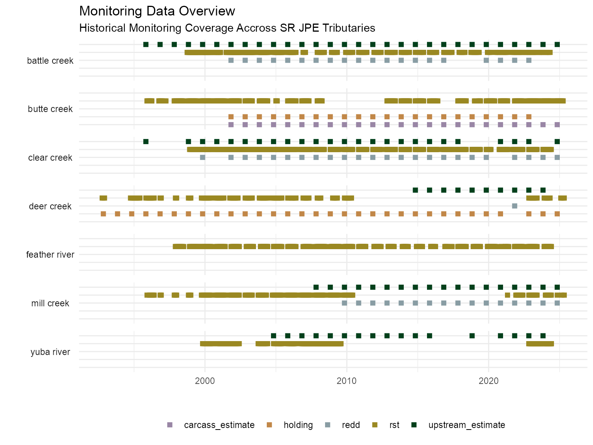
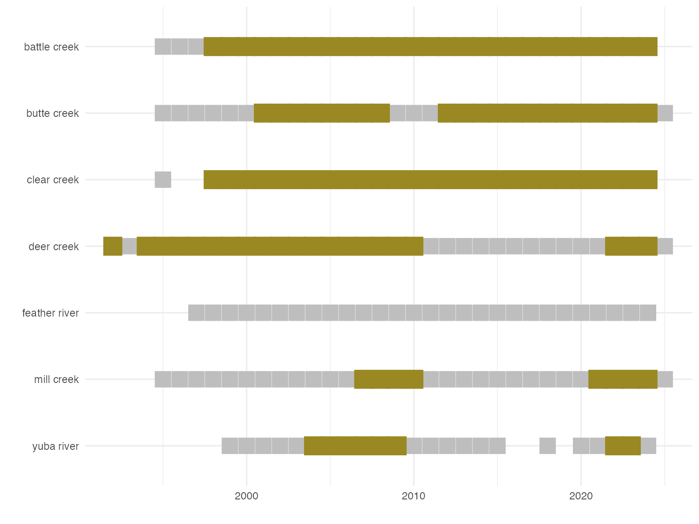
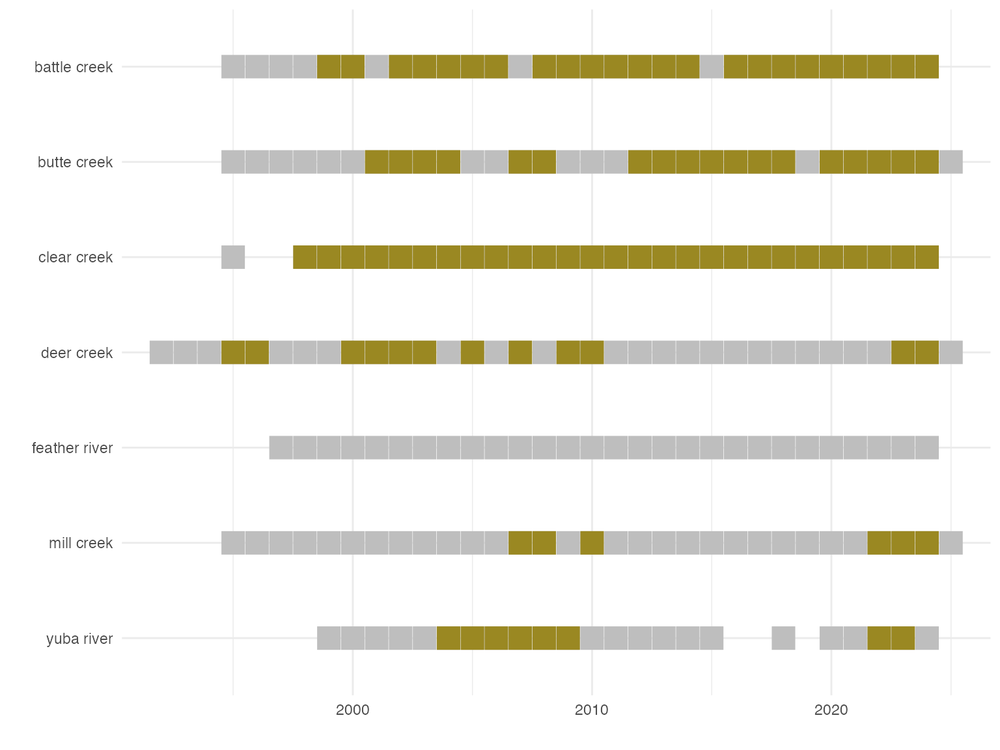

summary_of_data_for_modeling.RmdCollecting and selecting spring run chinook monitoring data to use in the spring run juvenile production estimate (SR JPE) was a multistep and iterative process. We acquired datasets, hosted a workshop to define a ruleset for evaluating years to exclude based on missing data (see years to include vignette for an in depth overview of this process), selected data where there was both adult and juvenile data overlap, and finally selected a single adult dataset to use for each year. The diagram below vizualizes this process and shows how many total datasets were retained along the way.
Extensive spring run chinook monitoring is conducted throughout the Central Valley. Early monitoring programs have been collecting data since the 1990s and monitoring has increased through time to expand monitoring types and data collection coverage across seven tributaries and the Sacramento river mainstem.
The plot below shows all monitoring coverage of rotary screw trap, adult upstream passage, adult holding, adult redd, and adult carcass survey data.

In order to utilize data for the spring run chinook juvenile production estimate, we need both juvenile data inputs (RST data) and adult data inputs (adults) for each year. The plot below shows the time windows where there is overlapping juvenile and adult monitoring on each tributary. While this limits the total monitoring used for the JPE, it still gives us a few large windows for most monitoring programs.

Although the SR JPE aims to utilize all available data, there are some years where data is sparse and is excluded from analysis. This decision process is documented in depth in the Years to Include Analysis.
After filtering the RST and Adult data to remove incomplete or inconsistent years. We are left with the following windows avaliable for the SR JPE. Gray boxes indicate that monitoring occured but that data is not being utalized for the JPE. See years to exclude tables for additional information on why a year might be excluded.

The summary table below states which years we have overlapping RST and Adult data. This table accounts for years excluded based on data quality and completeness considerations.
| Stream | Years to Include in Model | Total Number of Years |
|---|---|---|
| deer creek | 2005 - 2006, 2009 - 2014, 2016, 2020 - ongoing | 11 |
| battle creek | 2001 - 2004, 2007 - 2008, 2013 - 2014, 2016 - 2018, 2020 - ongoing | 14 |
| butte creek | 2003 - 2010, 2012 - 2015, 2021 - ongoing | 13 |
| clear creek | 1992, 1995 - 1996, 2000 - 2003, 2005, 2007, 2009 - 2010, 2022 - ongoing | 11 |
| mill creek | 2010 - 2012, 2018 - 2020, 2022 - ongoing | 7 |
| feather river | 2000 - 2003, 2005 - 2008, 2010 | 9 |
| yuba river | 2004 - 2008 | 5 |
This table shows us that there are a total of 70 stream years to use for developing the SR JPE stock recruit model.
There are 35 year, stream combinations where there are multiple adult data types to pick from. These occur for: “butte creek”, “battle creek”, “clear creek”, and “feather river.”
We used the following logic to select the data to use in these cases:
stream = "butte creek" we used carcass estimate data
(carcass estimate methods include mark recapture)stream = "battle creek" we used…TODOstream = "clear creek" we used…TODOstream = "feather river" we used carcass estimate
(carcass estimate methods include mark recapture)| Year | Stream | Sampling Type | Selected Sampling Site |
|---|---|---|---|
| 2001 | butte creek | rst , carcass estimate, holding | carcass estimate |
| 2002 | butte creek | rst , carcass estimate, holding | carcass estimate |
| 2003 | butte creek | rst , carcass estimate, holding | carcass estimate |
| 2004 | butte creek | rst , carcass estimate, holding | carcass estimate |
| 2005 | battle creek | rst , redd , holding , upstream passage estimate | TBD |
| 2006 | battle creek | rst , redd , holding , upstream passage estimate | TBD |
| 2007 | butte creek | rst , carcass estimate, holding | carcass estimate |
| 2008 | butte creek | rst , carcass estimate, holding | carcass estimate |
| 2008 | clear creek | rst , holding , upstream passage estimate | TBD |
| 2009 | battle creek | rst , redd , holding , upstream passage estimate | TBD |
… with 25 more rows
The table below compiles all the filtering above to provide a summary of the data utalized by the JPE for each stream and year.
| Year | Stream | Juvenile Data Type | Adult Data Type |
|---|---|---|---|
| 1992 | deer creek | rst | holding |
| 1995 | deer creek | rst | holding |
| 1996 | deer creek | rst | holding |
| 2000 | deer creek | rst | holding |
| 2000 | mill creek | rst | redd |
| 2001 | butte creek | rst | TBD |
| 2001 | deer creek | rst | holding |
| 2001 | mill creek | rst | redd |
| 2002 | butte creek | rst | TBD |
| 2002 | deer creek | rst | holding |
… with 60 more rows